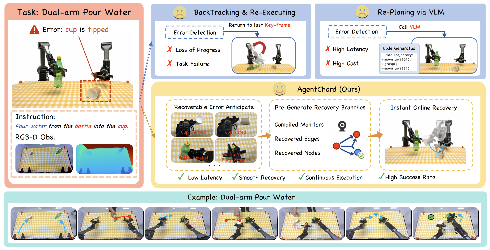
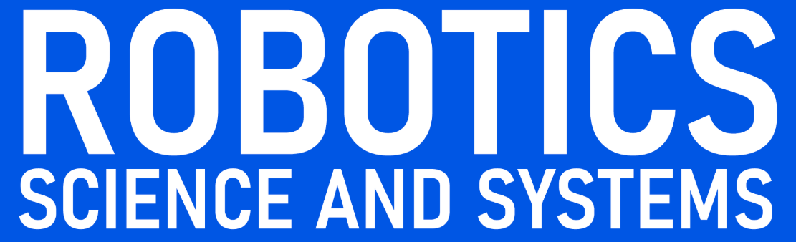
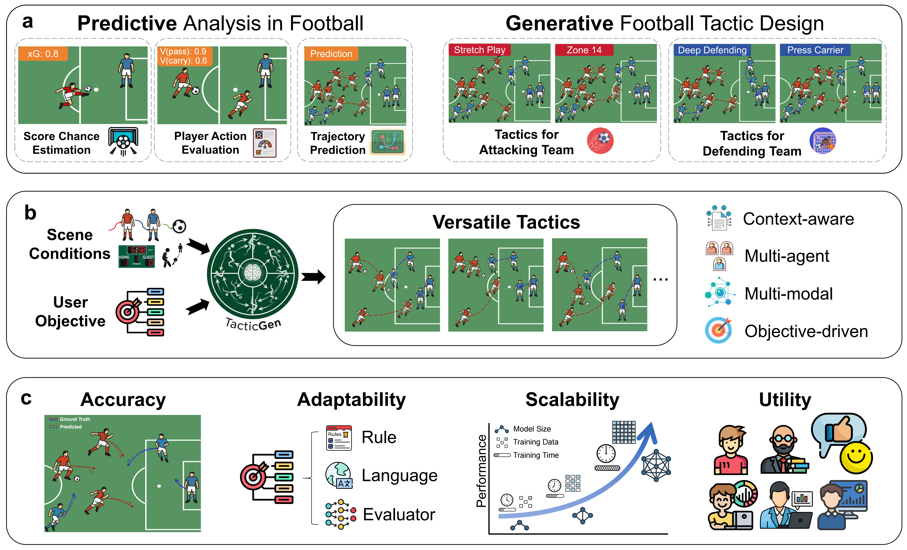
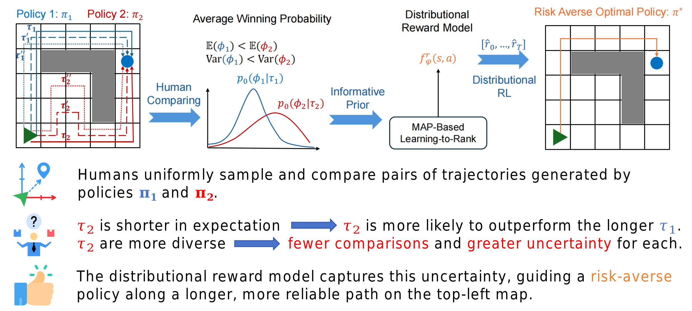
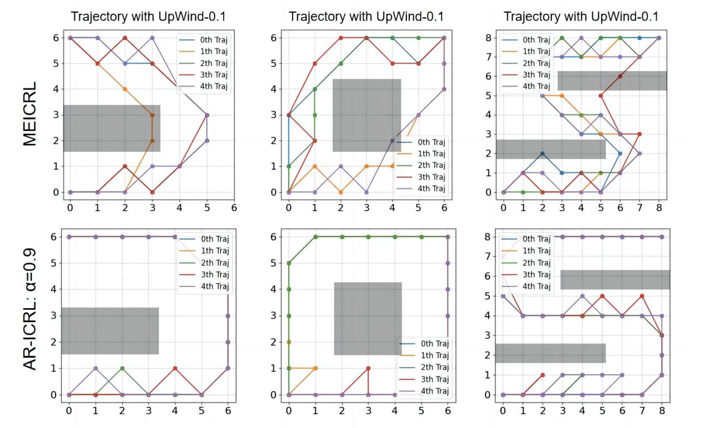
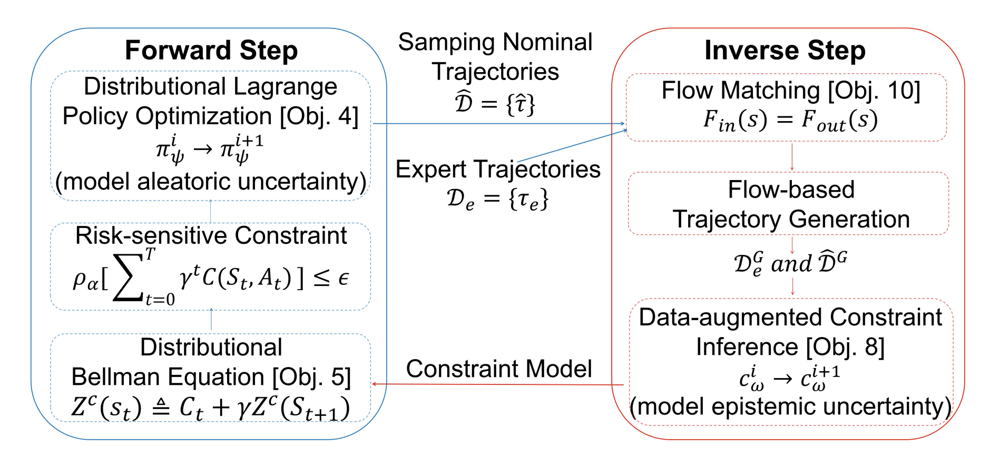
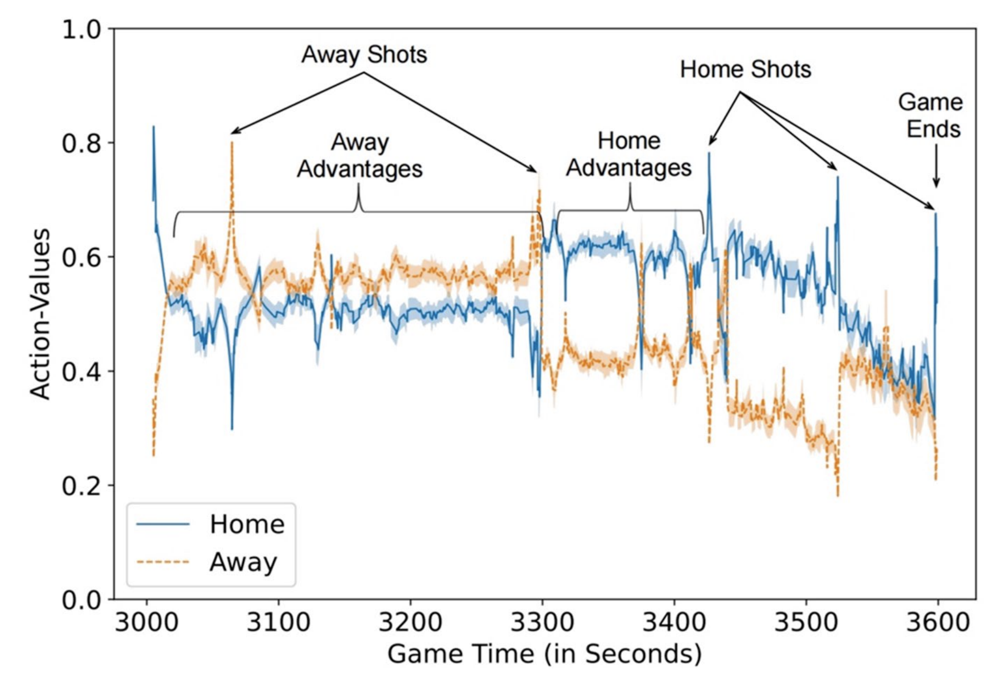
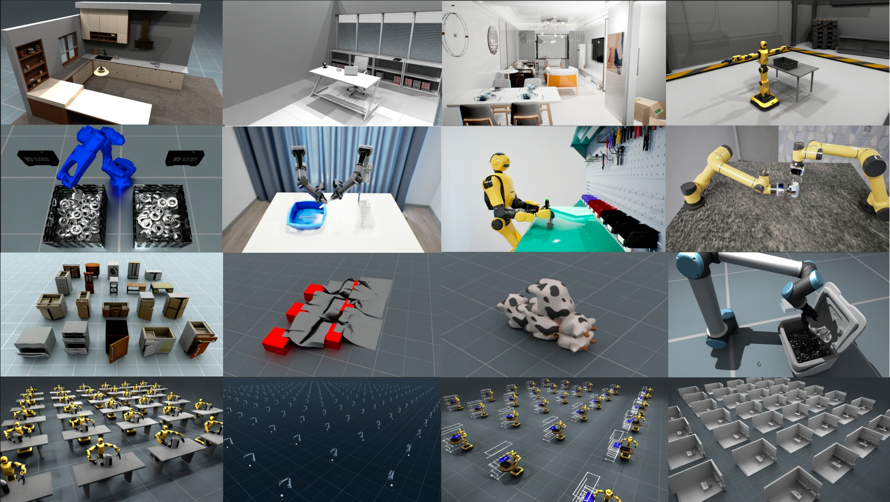

About
I'm a third-year Ph.D. candidate at The Chinese University of Hong Kong, Shenzhen (CUHK-SZ),
supervised by Prof. Guiliang Liu
and co-supervised by Prof. Hongyuan Zha.
Previously, I received my Bachelor's degree (rank: 1/225) with the highest honors from
Northwestern Polytechnical University (NWPU) in 2023.
I am currently a Research Intern (Talent Program) at Joy Future Academy, JD, working on embodied foundation models and embodied agents for general-purpose embodied intelligence. Previously, I was an Embodied AI Research Intern at DexForce Technology and an AI Research Intern at Real Analytics team, Knighthead Capital (~$19B AUM). My work has been published in top-tier international AI venues, including RSS, ICLR, ICML, and NeurIPS.
My research focuses on:
I am currently a Research Intern (Talent Program) at Joy Future Academy, JD, working on embodied foundation models and embodied agents for general-purpose embodied intelligence. Previously, I was an Embodied AI Research Intern at DexForce Technology and an AI Research Intern at Real Analytics team, Knighthead Capital (~$19B AUM). My work has been published in top-tier international AI venues, including RSS, ICLR, ICML, and NeurIPS.
My research focuses on:
- Robust Reinforcement Learning
- Embodied Intelligence (e.g., VLAs, embodied agents)
我是香港中文大学（深圳）计算机科学三年级博士生，
导师为刘桂良教授和查宏远教授。
此前，我于 2023 年以专业排名第 1/225 及最高荣誉获得西北工业大学计算机科学与技术学士学位。
我目前通过京东人才计划在京东探索研究院担任研究实习生，研究面向通用具身智能的具身基础模型与具身智能体。 此前，我曾在 跨维智能担任具身智能研究实习生，并在 Knighthead Capital（资产管理规模约 190 亿美元）的 Real Analytics 团队担任 AI 研究实习生。 我的研究成果发表于 RSS、ICLR、ICML 和 NeurIPS 等国际顶级人工智能会议。
我的研究方向包括：
我目前通过京东人才计划在京东探索研究院担任研究实习生，研究面向通用具身智能的具身基础模型与具身智能体。 此前，我曾在 跨维智能担任具身智能研究实习生，并在 Knighthead Capital（资产管理规模约 190 亿美元）的 Real Analytics 团队担任 AI 研究实习生。 我的研究成果发表于 RSS、ICLR、ICML 和 NeurIPS 等国际顶级人工智能会议。
我的研究方向包括：
- 鲁棒强化学习
- 具身智能（如 VLA、具身智能体）
News
- [2026.04] AgentChord was accepted to RSS 2026.
- [2026.04] TacticGen was released on arXiv.
- [2026.01] Sim2Real-VLA was accepted to ICLR 2026.
- [2025.09] Diff-UAPA was accepted to NeurIPS 2025.
- [2025.07] RL for Ice Hockey Analysis was published online as Springer Nature Book Chapter.
- [2025.01] UA-PbRL and ExICL were accepted to ICLR 2025.
- [2025.01] ICRL Survey was accepted to TMLR.
- [2024.05] Robust-ICRL was accepted to ICML 2024.
- [2024.01] UA-ICRL was accepted to ICLR 2024.
Education
Sep. 2019 – Jul. 2023
B.S. in Computer Science and Technology
(with the highest honors)
Internship
Jun. 2026 – Present
Research Intern (Talent Program),
Joy Future Academy, JD, Shenzhen
Selected for JD's talent program to conduct research on embodied foundation models and embodied agents, with a focus on scalable learning, reasoning, and decision-making for general-purpose embodied intelligence.
Sep. 2025 – May 2026
Embodied AI Research Intern,
DexForce Technology, Shenzhen
Core contributor to EmbodiChain, an open-source, GPU-accelerated embodied intelligence platform; built simulation-based task pipelines and end-to-end Sim-to-Real VLA systems for robust real-robot deployment.
Sep. 2024 – Aug. 2025
Sports AI Research Intern,
Knighthead Capital (~$19B AUM), Remote
Collaborated with the
Real Analytics
team on offline reinforcement learning for football analytics and recommendation.
Publications
* indicates equal contribution, # indicates project leader

From Reaction to Anticipation: Proactive Failure Recovery through Agentic Task Graph for Robotic Manipulation


TacticGen: Grounding Adaptable and Scalable Generation of Football Tactics




Risk, Reward, and Reinforcement Learning in Ice Hockey Analytics

- From Reaction to Anticipation: Proactive Failure Recovery through Agentic Task Graph for Robotic Manipulation
Sheng Xu, Ruixing Jin, Huayi Zhou, Bo Yue, Guanren Qiao, Yunxin Tai, Yueci Deng, Kui Jia, Guiliang Liu
Robotics: Science and Systems (RSS), 2026 (Oral Presentation)
[Paper] [Code] [Project Page] [Report (机器之心)] - TacticGen: Grounding Adaptable and Scalable Generation of Football Tactics
Sheng Xu, Guiliang Liu, Tarak Kharrat, Yudong Luo, Mohamed Aloulou, Javier López Peña, Konstantin Sofeikov, Adam Reid, Paul Roberts, Steven Spencer, Joe Carnall, Ian McHale, Oliver Schulte, Hongyuan Zha, Wei-Shi Zheng
arXiv preprint, 2026
[Paper] [Code] [Project Page] [Report (AI科技评论)] - Sim2Real VLA: Zero-Shot Generalization of Synthesized Skills to Realistic Manipulation
Runyi Zhao, Sheng Xu, Ruixing Jin, Yueci Deng, Yunxin Tai, Kui Jia, Guiliang Liu
International Conference on Learning Representations (ICLR), 2026
[Paper] [Code] - Dexterity-BEV: Aligning 3D World and Actions for Generalizable Robot Policies Learning
Huayi Zhou, Wei Gao, Dekun Lu, Ruiji Liu, Zhanqi Zhang, Ziyang Zhang, Jian Chen, Wenlve Zhou, Sheng Xu, Shumin Li, Kangyi Guo, Shichen Xu, Zixin Huang, Yongyi Su, Kui Jia
arXiv preprint, 2026
[Paper] [Project Page] - Focus-Then-Contact: Speeding Up Robotic Contact-Rich Task Learning with Affordance-Guided Real-World Residual Reinforcement Learning
Guanren Qiao, Ruixiang Ouyang, Sheng Xu, Ruixing Jin, Yueci Deng, Yunxin Tai, Kui Jia, Guiliang Liu
International Conference on Machine Learning (ICML), 2026
[Paper] [Project Page] - Grounding Sim-to-Real Generalization in Dexterous Manipulation: An Empirical Study with Vision-Language-Action Models
Ruixing Jin, Zicheng Zhu, Ruixiang Ouyang, Sheng Xu, Bo Yue, Zhizheng Wu, Guiliang Liu
European Conference on Computer Vision (ECCV), 2026
[Paper] - RoboFlow4D: A Lightweight Flow World Model Toward Real-Time Flow-Guided Robotic Manipulation
Sixu Lin, Huaiyuan Xu, Junliang Chen, Zhuohao Li, Guangming Wang, Yixiong Jing, Sheng Xu, Runyi Zhao, Brian Sheil, Lap-Pui Chau, Guiliang Liu
International Conference on Machine Learning (ICML), 2026
[Paper] [Code] [Project Page] - HoopEval: Individual Player Action Evaluation via Deep Reinforcement Learning
Xing Wang, Yu Fu, Sheng Xu, Konstantinos Pelechrinis, Mingxin Zhang, Miguel Ángel Gómez Ruano, Guiliang Liu, Shaoliang Zhang
MIT Sloan Sports Analytics Conference (SSAC), 2026
[Paper]
- A Distributional Approach to Uncertainty-Aware Preference Alignment Using Offline Demonstrations
Sheng Xu, Bo Yue, Hongyuan Zha, Guiliang Liu
International Conference on Learning Representations (ICLR), 2025
[Paper] [Code] - Risk, Reward, and Reinforcement Learning in Ice Hockey Analytics
Sheng Xu, Oliver Schulte, Yudong Luo, Pascal Poupart, Guiliang Liu
Book Chapter in Artificial Intelligence and Machine Learning in Sports Science, Springer, 2025
German Version: Künstliche Intelligenz und maschinelles Lernen in der Sportwissenschaft
[Paper (English)] [Paper (German)] [Code] - Uncertainty-aware Preference Alignment for Diffusion Policies
Runqing Miao*, Sheng Xu*#, Runyi Zhao, Wai Kin Victor Chan, Guiliang Liu
Annual Conference on Neural Information Processing Systems (NeurIPS), 2025
[Paper] [Code] - Toward Exploratory Inverse Constraint Inference with Generative Diffusion Verifiers
Runyi Zhao*, Sheng Xu*, Bo Yue, Guiliang Liu
International Conference on Learning Representations (ICLR), 2025
[Paper] [Code] - A Comprehensive Survey on Inverse Constrained Reinforcement Learning
Guiliang Liu, Sheng Xu, Shicheng Liu, Ashish Gaurav, Sriram Ganapathi Subramanian, Pascal Poupart
Transactions on Machine Learning Research (TMLR), 2025
[Paper] [Code]
- Robust Inverse Constrained Reinforcement Learning under Model Misspecification
Sheng Xu, Guiliang Liu
International Conference on Machine Learning (ICML), 2024
[Paper] [Code] - Uncertainty-aware Constraint Inference in Inverse Constrained Reinforcement Learning
Sheng Xu, Guiliang Liu
International Conference on Learning Representations (ICLR), 2024
[Paper] [Code] - Enhancing Human-AI Collaboration Through Logic-Guided Reasoning
Chengzhi Cao, Yinghao Fu, Sheng Xu, Ruimao Zhang, Shuang Li
International Conference on Learning Representations (ICLR), 2024
[Paper] [Code]
Projects

EmbodiChain Core Developer
An end-to-end, GPU-accelerated, and modular platform for building generalized Embodied Intelligence
Developed a scalable, agent-driven robotic data generation pipeline for Sim2Real policy training and generalization.

Honors and Awards
- National Scholarship 2021 & 2022
- Ph.D. Presidential Fellowship (highest scholarship), 2023-2027
- Duan Yong Ping Meritorious Research Award, 2024
- Duan Yong Ping Travel Award, 2024
- Outstanding Graduate of Shaanxi Province, 2023
- NWPU Top Undergraduate Student Award (highest honor of undergraduates, only 10 winners), 2022
- NWPU Top Class Scholarship (highest scholarship, only 10 winners) 2022
- Modern Scientists Scholarship (top 1%), 2022
- Huawei Scholarship (top 1%), 2022
Teaching
- DDA4230 Reinforcement Learning: Fall 2023 & 2024
Leading Teaching Assistant x 2 - DDA2001 Introduction to Data Science: Spring 2024 & 2025
Leading Teaching Assistant x 1 (Recipient of the Excellent TA Award), Teaching Assistant x 1
Service
- Conference Reviewer: NeurIPS (Top Reviewer), ICML (Gold Reviewer), ICLR, ECCV, AAAI, AISTATS
- Journal Reviewer:
- IEEE Robotics and Automation Letters
- Transactions on Machine Learning Research
- Expert Systems With Applications
- Pattern Recognition
- Applied Intelligence
- Volunteer: ICML 2024